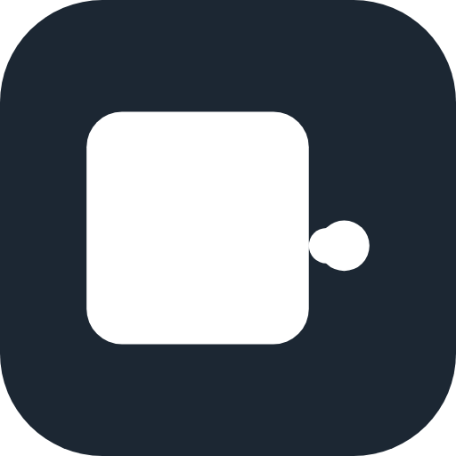

Prime Minutes
會議錄音 → 標註語者的逐字稿 → AI 筆記與摘要
全程在手機上完成，完全離線
iOS 與 Android App · 20–30 分鐘說明＋示範
Android 用戶：掃碼直接下載最新版 APK
安裝時允許「未知來源」即可；iPhone 用戶走 TestFlight 受邀測試。
標誌：墨色的紀錄頁，一條綠色關鍵線釘住整場的重點
簡報 v2.22 · Android v0.53.15 · 版次 2026-10-22
為什麼需要它
會議紀錄的三個痛點
- 隱私——會議內容上傳到雲端服務，交給第三者處理。
- 成本與依賴——訂閱制、按分鐘計費、需要網路；服務改版就失效。
- 耗時——會後人工聽錄重建逐字稿、歸納筆記，一場會花掉一小時以上。
Prime Minutes 的答案：這些工作全部由你自己手機上的模型完成，資料不出手機。
對比
雲端會議 AI 與手機上的區別
| 雲端會議 AI 服務 | Prime Minutes |
|---|
| 音訊在哪處理 | 上傳到服務商伺服器 | 你的手機，資料不出手機 |
| 網路需求 | 全程需要（即時上傳串流） | 僅下載模型與匯入內容時 |
| 計費 | 按人按月的訂閱制 | 免費下載（APK／TestFlight） |
| 帳號 | 註冊、綁定身分 | 無帳號、無伺服器 |
| 會後資料在哪 | 服務商的雲端與備份 | 只在你手機（App 資料不入備份） |
適合高敏感場合：法律、醫療、專利、併購、內部評審——會議內容從頭到尾不經第三者。
一頁看懂
錄完，筆記就寫好了
Galaxy Note10+ 實機：連錄兩場會議，背景整理筆記
- 錄音中即時逐字稿，約兩秒上螢幕，同時標註誰在說話。
- 錄音中 AI 就在閱讀逐字稿：決議、待辦、提議、未決事項與數字。
- 停止後自動完成段落式摘要與標題。
- 8 GB 以上的手機錄音中同步閱讀；卡片預告第一次閱讀約幾分鐘後開始。
- 之後可搜尋、提問、匯出、寄給與會者。
特色總覽
錄音 · AI 筆記 · 摘要 · 逐字稿
錄音現場
說話後約兩秒，文字上螢幕
- 轉寫延遲四段可選：0.16／0.48／0.96／1.92 秒，越短越快上螢幕、越長越準（預設 1.92 秒）。
- 語者分離由 Nemotron-3 聲紋模型完成，錄音中即標註；標註延遲 5–30 秒可調（預設 15 秒）。
- 「下一場」按鈕：連續錄多場，前一場的背景筆記接續整理。
會後成果
摘要、筆記，每個時間點可核對原話
- 筆記依五類歸檔：決議、待辦、未決、提議、重要數字，逐條附時間。
- 閱讀以約 1,500 詞元為一批、邊錄邊寫；停止後自動生成標題與摘要。
- 摘要為連貫散文，一次最多 1,600 詞元；超長會議分寫接續（每段約 600 詞元、上限 4 段）。
- 摘要句尾附筆記時間（如 [1:23]），點句子即可播原話。
播放器與逐字稿雙向同步：點文字播原話，拖曳進度列文字跟著標示
誰說了什麼
語者辨識、名錄與分界編輯
- 聲紋比對由 CAM++ zh-en（約 29 MB）完成：每人以「已確認」的樣本依時長加權，構成他的聲紋基準。
- 建議分三級：0.5 以下不建議、0.5–0.7「可能」、0.7 以上且明顯領先才算穩；只是建議，名字由你確認後才成為基準。
- 圖例與顏色一眼分人；偏離本人其他場次的樣本會先詢問，也能一鍵清除全部聲音資料。
- 錄音中的標註約 5 秒後才出現、尾列隨新證據滾動修正，停止後整場重算——最終稿才是定稿；錄音中的逐字行已直接顯示語者名字（隨標註即時更新，改名後立刻反映）；短促回應偶爾被併入前一位，長按那一句即可改派或分開。
「辨識聲音」頁說明原理，經你同意才開啟；開啟後會議自動建議名字、由你確認——「聲音」是最多 60 秒語音算出的一串數字（不是錄音），「忘記聲音」先確認才執行
分界編輯器：拖動「換人位置」修正語者，可復原、重做；時間為推算時標「≈」。完成後每句可長按改派語者或分開（錄音中只供觀看）
名字跨會議共用（人錄），從系統聯絡人加入電子郵件；人名欄不自動改字，iOS 並建議聯絡人姓名。
會議庫
用語意搜尋整個會議庫
會議內搜尋：標「≈」者為語意命中，點段落直接跳原話時間點
- 語意搜尋由 EmbeddingGemma 2 270M（約 160 MB）在手機上完成；詞彙搜尋不需模型，安裝即可用。
- 每段逐字稿（≤ 512 詞元）嵌入為 256 維向量做餘弦排序；嵌入模型閒置 60 秒自動釋放記憶體。
- 依日期分組，支援篩選標籤與「依人」過濾。
- 語意索引在背景建立：搜尋列顯示「索引建立中…」，完成後「≈」命中自動補上，不必重打。
- 搜尋框不自動修正輸入（專名不被改字）；往下拖頁即收起鍵盤，長逐字稿不被擋住。
向會議提問
Ask：回答附出處，可點回原話
- 三階段：搜尋會議 → 閱讀摘錄 → 作答，面板顯示每階段秒數（約 6–14 秒）。
- 混合檢索：EG2 向量＋詞彙 BM25 雙路排名融合；問題點名某人時，優先路由其參與的會議。
- 摘錄最多 8 條（詞元預算約 800）；答案上限約 320 詞元，摘錄裡沒有答案就直說沒有。
- 出處列「會議 · 時間」，點出處直接從該時間播放原話。
- 回答跟隨提問的語言，可連續追問；摘錄標語者，能答「誰負責什麼、期限何時」。
不只錄音
匯入音訊檔 · Podcast · YouTube · PeerTube
首頁「＋」：檔案 / Podcast / 影音連結
Podcast 單集：貼上 RSS 集數連結，自動下載轉寫
- 音訊檔（mp3／wav／m4a…）直接匯入；YouTube、PeerTube 貼連結即可——PeerTube 支援任意站點，自動選最小檔案，優先僅含音訊的那個。
- 所有音訊一律重採為 16 kHz 單聲道才進管線，與麥克風錄音同一條路。
- 逐字稿時間與播放位置對齊：匯入後實測偏移 0 ms——點哪個時間，就播到那句。
- 下載可暫停／續傳，中斷不視為失敗；省電模式自動配合。
- 匯入走同一條管線：逐字稿、筆記、摘要、搜尋、提問全部可用，成果與錄音場次完全相同。
成果帶走
匯出與「寄給與會者」
匯出：PDF · Markdown · 純文字 · SRT／VTT／LRC 字幕 · 場次 .m4a
寄給與會者：摘要＋紀要＋會議時間，用你自己的郵件 App
- 匯出內容以語者名字標註（非 S1／S2 代號）；PDF 與純文字含標題、摘要、待辦、筆記與逐字稿（附時間標點）。
- 字幕：長句按標點自動切條，單條不超過 32 個中文字，時間依句長分配，直接供剪輯軟體使用。
- 檔名取會議標題（前 60 字元，非法字元自動代換）。
- 場次 .m4a 內含音訊＋逐字稿＋筆記＋摘要，可在另一台裝置還原。
- 對話框（改名／新增人名／新增信箱／加入收件者）的鍵盤「完成」鍵直接提交；Ask 答案完成與匯出完成有觸感回饋。
場次整理
合併與分割，可復原
- 一次會議錄成多場 → 合併成一場完整紀錄。
- 長錄音 → 在時間點分割成多個場次。
- 逐字稿可改文字、改派語者，長按即改。
怎麼做到的
全部模型都在手機 CPU 上跑
| 模型 | 用途 | 大小 |
|---|
| X-ASR（含標點）＋ Nemotron-3 語者分離 | 語音辨識、語者標註（4 種轉寫延遲可選） | 約 273 MB |
| Gemma-4-E2B 會議模型（行動版 v1） | AI 筆記、摘要、提問；中文為底、英文另配提示（預設） | 約 2.2 GB |
| Gemma-4-E4B 會議模型（行動版 v2） | 同上，較完整；限 RAM 8 GB 以上 | 約 3.3 GB |
| EmbeddingGemma 2 270M（選用） | 語意搜尋、提問檢索 | 約 160 MB |
| CAM++ zh-en（選用） | 辨識聲音（建議名字） | 約 29 MB |
首次使用顯示總量、選「僅限 Wi‑Fi」下載（語音模型 273 MB 約 1 分鐘完成）；Android 8.0+（ARMv8.2 dotprod）、iOS 17+。
運作方式
一條管線，全程在手機上
麥克風
→
串流語音辨識 X-ASR＋標點
→
聲紋分離 Nemotron：逐句標註語者
→
場次檔 .m4a：音訊＋逐字稿＋筆記＋摘要同檔
AI 筆記 Gemma E2B/E4B：每讀滿約 1,500 詞元寫一批
→
停止後：段落摘要＋標題；長會議分段補齊
→
EmbeddingGemma 索引
→
搜尋 · 提問 · 匯出 · 寄給與會者
錄音與整理互不阻塞：按「下一場」立刻錄下一場，前一場在背景接續整理。場次檔可在另一台裝置還原全部內容。
效能與品質
延遲、準確度與資源
轉寫延遲 × 準確度：四種 int8 變體（預設 1.92 秒最準）
- Note10+（Snapdragon 855）整夜實測：21–28 分鐘連續錄音，轉寫穩定，記憶體約 1.1 GB 峰值。
- 公開評測（AISHELL-4／AMI）語者分離 DER：中文 9.8 %、英文 12.0 %；換人點約四成正好對齊，分界更準的工程進行中（見「接下來」）。
- Ask 提問回應 6–14 秒（E2B，含檢索）。
- App 中斷／被系統終止後：自動恢復繼續，不損壞場次。
- 純 CPU 推理：不搶 GPU／NPU，溫控正常。
- 錄音畫面上方即時顯示 CPU／記憶體／電池，數值過高轉紅。
隱私設計
資料不出手機
- 無帳號、無伺服器、無上傳——音訊與逐字稿只存在你的手機。
- 完全離線可用：飛航模式也能錄音、筆記、摘要、提問。
- 唯一的網路連線：下載模型、匯入 Podcast／YouTube／PeerTube，以及每日一次新版檢查。
- 聯絡人郵件走你裝置上既有的郵件 App，App 不經手內容。
- App 資料不入備份（會議隱私優先）。
適合：法律、醫療、專利、併購、內部評審等高敏感會議。
調校空間
設定：延遲、模型與下載
模型管理：E2B／E4B 切換、選用模型上下架、僅限 Wi‑Fi
- 四段延遲各約 155 MB：越短越快上螢幕，越長越準確。
- 預設 1.92 秒：四段中最準確，一般會議建議維持預設。
- 會議模型（E2B／E4B）可切換，換完可整場重跑筆記與摘要；E4B 現為第二代權重：評測摘要 4.0／5（第一代 3.2）、自相矛盾 16 → 7。
- 下載可設僅限 Wi‑Fi，暫停／續傳，電量與網路自動配合。
- 介面語言：跟隨系統、English 或繁體中文；AI 產出的中文（筆記、摘要、回答）自動跟隨介面語言。
可靠性
中斷不是事故
- 錄音中被系統終止 → 重開自動接回，已錄內容不丟。
- 背景模型下載可暫停／續傳，電量與網路自動配合。
- 整夜 4 小時連續壓力測試：場次全數可解析、無損壞。
- App 更新後資料保留（Releases 覆蓋安裝）。
平台
Android 與 iOS 同步推進
- Android：GitHub Releases 直接安裝 APK，App 內每日檢查新版。
- iOS：TestFlight 測試版（iPhone 17+ 建議；6 GB 記憶體裝置亦支援 E4B）。
- 雙平台行為對齊：搜尋、提問、播放同步、逐字稿編輯。
- 互通：.m4a 場次檔兩平台交換——一端匯出（附逐字稿與筆記），另一端匯入即開場次。
- 取得與更新：github.com/vieenrose/PrimeMinutes（Releases 與 TestFlight）
坦白講
限制與取捨
- E4B 需要 8 GB 記憶體；較小的手機用 E2B，筆記在錄音結束後閱讀（較慢出現，結果相同）。
- 重疊說話時語者分離可能延後標註（淺灰句子）——可用分界編輯器修正，可復原。
- 換人點是估出來的：分離器給區間、音量吸附對齊，約四成正好對齊，尾端偶爾晚半秒到三秒——分界編輯器可逐點微調，更準的對齊工程進行中。
- 手機放得越近，人分得越準：同一場會議改從遠處收音，漏掉的換人點從 25 % 升到 35 %；中文會議也一樣，小會議室約 25 %，大會議室升到將近七成——離得遠，容易把同一個人認成兩個人，跟說哪種語言無關。開會時請把手機放在桌子中央、靠近講話的人；一秒內的快速接話仍最難抓，長按那句改派即可補救。
- 提問（Ask）為實驗性：答案一律附出處，請點回原話核對。
- 第一次進行長時間工作時，App 說明一次「電池最佳化」的影響並詢問是否豁免。
- 超長會議：摘要分段逐段補齊，時間與會議長度成正比。
現場示範（實機）
八分鐘走完一場會議
- 封面掃碼安裝 APK——無帳號、裝完即用（示範機已裝好）。
- 首頁按錄音——邊講邊出逐字稿，語者即時標註（約 2 分鐘）。
- 按停止並儲存——AI 筆記卡片顯示閱讀進度。
- 開場次：摘要＋筆記＋標題；點任一摘要句子播放原話。
- 提問：「誰負責什麼、期限何時？」——答案附出處，點出處跳原話。
- 搜尋整個會議庫，按人過濾。
- 匯出 PDF／寄給與會者（示範用 demo 會議：尾牙與產品上線）。
正在進行
接下來
- Podcast 系列訂閱：訂閱＝儲存節目連結，「檢查新集數」比對新集，自動走既有匯入管線；僅限 Wi‑Fi、每節目只取最新集；自動檢查列 v2（設計已完成：docs/design/podcast-series.md）。
- 長會議摘要再強化：分段散文式摘要與新摘要模型。
- 語者功能延伸：分界編輯器與人名錄持續打磨。
- 語者分界更準：換人瞬間改由音量最低點吸附對齊——十場公開會議實測：英文「對得剛剛好」47 % → 52 %、偏差中位數 0.08 秒降為 0.00。中文難在「找不到換人點」，主因是收音距離：離得遠，容易把同一個人認成兩個人。放大語者記憶的離線重算，六場中文會議實測找不到率 39 % → 32 %，已過出貨門檻；英文對照也沒有變差，反而跟著進步（25 % → 22 %），正在評估用於匯入音訊（代價是多下載一個約 100 MB 的模型）；另試過用聲紋逐句重新指派，說話者標對的比例 88 % → 90 %，但找不到率沒變，暫不上線。
- 語者記憶恢復原廠長度：模型原本設計可保留約 21 秒的語者聲音樣本來比對是誰在說話，App 先前只用了一半。恢復之後，一場 20 分鐘中文會議的語者標錯比例從 32.5 % 降到 5.7 %；Note10+ 實測錄音中照樣跟得上（5 分鐘錄音幾乎與講話同步處理完），代價只是標註晚一點點出現。Android 已驗證，iOS 驗證中，預計下一版上線。
- 模型管線與 Ask 延遲持續優化。
Prime Minutes
你的會議，留在你的手機。
GitHub Releases 下載 APK
iOS TestFlight
github.com/vieenrose/PrimeMinutes
目前 Android v0.53.15（版次 2026-10-22）· iOS TestFlight 測試版同步推進 · 簡報 v2.22
謝謝！示範與 Q&A 時間。